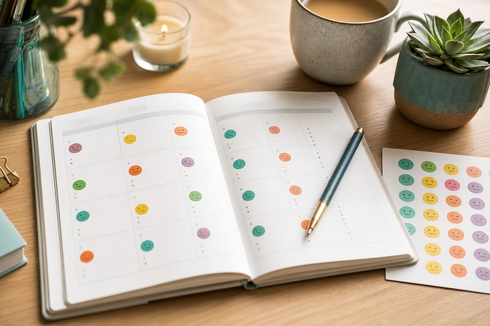

Free, printable recovery tools — download, print, and use as often as you need.
Build a daily habit of honest reflection. These tools help you check in with yourself and stay grounded.
Morning check-in, gratitude prompts, evening reflection, and a daily rating scale.
Download PDF →
Track your mood, sleep, exercise, and cravings across the week.
Download PDF →Gratitude, scripture, letting go, and prayer — a space for daily faith practice.
Download PDF →Identify what sets you off and build a plan for when it happens.
Map your personal triggers, build a coping toolkit, and create an emergency action plan.
Download PDF →A living document to map environmental, emotional, social, physical, and situational triggers.
Download PDF →Identify triggers and plan healthier responses — before you need them.
Download PDF →Cravings rise and fall like waves. Learn to ride them out instead of giving in.
Download PDF →Put your thoughts on paper to see the truth. Weigh the real costs and benefits.
Download PDF →Evidence-based therapeutic tools you can use between sessions or on your own.
Capture unhelpful thoughts, examine the evidence, and find a healthier perspective.
Download PDF →A guided, numbered walkthrough of the CBT thought record process.
Download PDF →Identify and reframe unhelpful thoughts that trigger urges to use.
Download PDF →PLEASE skills, Opposite Action, TIPP technique, and Wise Mind reflection for managing overwhelming emotions.
Download PDF →ACCEPTS skills, self-soothing techniques, and radical acceptance for crisis moments.
Download PDF →20 sentence-completion prompts to explore your relationship with anger.
Download PDF →Build your roadmap for recovery and have a plan ready for the tough days.
Set weekly, monthly, and 3-month goals. Identify your support system and track your commitment.
Download PDF →Warning signs, people and places to avoid, a step-by-step crisis plan, and emergency contacts.
Download PDF →A comprehensive plan covering sobriety date, warning signs, high-risk situations, daily and weekly activities.
Download PDF →Reflect on how addiction has affected your health, relationships, career, finances, and dreams.
Download PDF →A daily plan for grounding, nervous system check-ins, coping skills, and safe connections.
Download PDF →Deepen your connection with yourself and your faith through guided reflection.
Connect scripture with your recovery — identify verses, apply principles, and compose prayers for guidance.
Download PDF →Daily mindfulness practice using WHAT and HOW skills — observe, describe, participate without judgement.
Download PDF →The Gracie mobile app offers exclusive tools and features to support your recovery on the go.